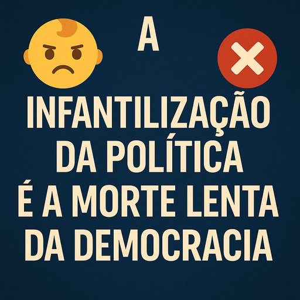

Publicado em 2025-06-23 15:18:11
Vivemos tempos curiosos em que uma frente de partidos que se apresenta como "de esquerda" já não luta por pão, trabalho ou justiça social — mas por hashtags, linguagem neutra e "espaços seguros". Em vez de operários com mãos calejadas, temos agora jovens indignados de polegar afiado e megafone digital.
Esses novos “artesãos woke” — pois de artesãos têm apenas o labor de esculpir narrativas — abandonaram os campos, as fábricas e as trincheiras da desigualdade. Preferem moldar indignações instantâneas no torno da internet, onde o barro é frágil e a moral, líquida.
Enquanto o país afunda em problemas reais — salários miseráveis, habitação impossível, corrupção endémica, justiça lenta — a esquerda performativa discute os pronomes, censura estátuas e cancela tudo o que mexe fora da sua redoma ideológica. Mas... fá-lo com um ar tão sério, que quase nos esquecemos que não mudam nada.
Aliás, mudam uma coisa: a linguagem. Agora, ninguém "rouba" — comete-se “apropriação”. Ninguém é “ignorante” — tem apenas "pouco acesso a narrativas plurais". E ninguém é “cínico” — é “crítico em desconstrução”.
No fundo, essa frente woke é o braço cultural do imobilismo político. Grita nas ruas, mas ajoelha-se nos gabinetes. Combate o capitalismo com iPhones, a opressão com posts, e o colonialismo com indignações importadas das universidades californianas.
Portugal, um país com história de lutas verdadeiras, vê-se agora reduzido a este teatro de sombras onde a esquerda se esqueceu da classe trabalhadora e se enamorou da bolha académica.
A infantilização da política — esse processo em que o debate público se rende a emoções voláteis, palavras fofinhas e indignações fabricadas — está a corroer lentamente o tecido cívico de Portugal.
Quando a esquerda troca o estudo da realidade pelo "sentir-se ofendido", temos um problema estrutural. A política deixa de ser uma arena de confronto de ideias e passa a ser um recreio onde se fazem birras por quem usou a palavra errada. E assim, sem darmos por isso, substitui-se a classe trabalhadora por classes sensíveis, e os direitos laborais por direitos de representação simbólica.
A consequência mais grave? O vazio político. Ao afastarem-se das preocupações reais do povo — como salários indignos, pensões insuficientes, listas de espera no SNS, ou corrupção endémica — os partidos woke deixam o campo aberto à extrema-direita, que sabe falar ao instinto com promessas fáceis, simplificações perigosas e uma retórica viril que contrasta com a fragilidade autoimposta dos seus adversários.
Infantilizar a política é abdicar dela. É entregar o comando da razão a um comité emocional em estado de alerta constante. É viver num eterno "isso não se diz!", enquanto o país se afunda em problemas que exigem coragem, trabalho e visão — não apenas correção política.
Mais do que nunca, precisamos de uma esquerda adulta. Uma que saiba unir justiça social com responsabilidade, igualdade com liberdade, e que tenha a ousadia de deixar de ter medo das palavras difíceis ou das realidades complexas.
Porque se a política se transforma num jogo de “quem se magoa primeiro”, a democracia morre de tédio — e o povo, de desespero.
Autores: Francisco Gonçalves & Augustus Veritas
🛑 Nota: Este conteúdo pode ser rotulado como "não confiável" pelos autómatos zelosos do Facebook.
👉 Lê o artigo completo, pensa por ti próprio e decide aqui: https://www.fragmentoscaos.eu
Excerto deste artigo :
"A infantilização da política é a arte de reduzir o debate público a birras ideológicas, slogans de almofada e uma moral de desenhos animados. Nesta nova era, os cidadãos são tratados não como adultos racionais e críticos, mas como crianças impressionáveis que devem ser protegidas da complexidade do mundo — e da responsabilidade de o pensar. Os novos artífices do discurso público — os chamados 'artesãos woke' — criam realidades paralelas, onde a emoção sobrepõe-se à razão, e o ruído substitui o pensamento. É a política como teatro infantil, onde o ofendido manda mais do que o informado."